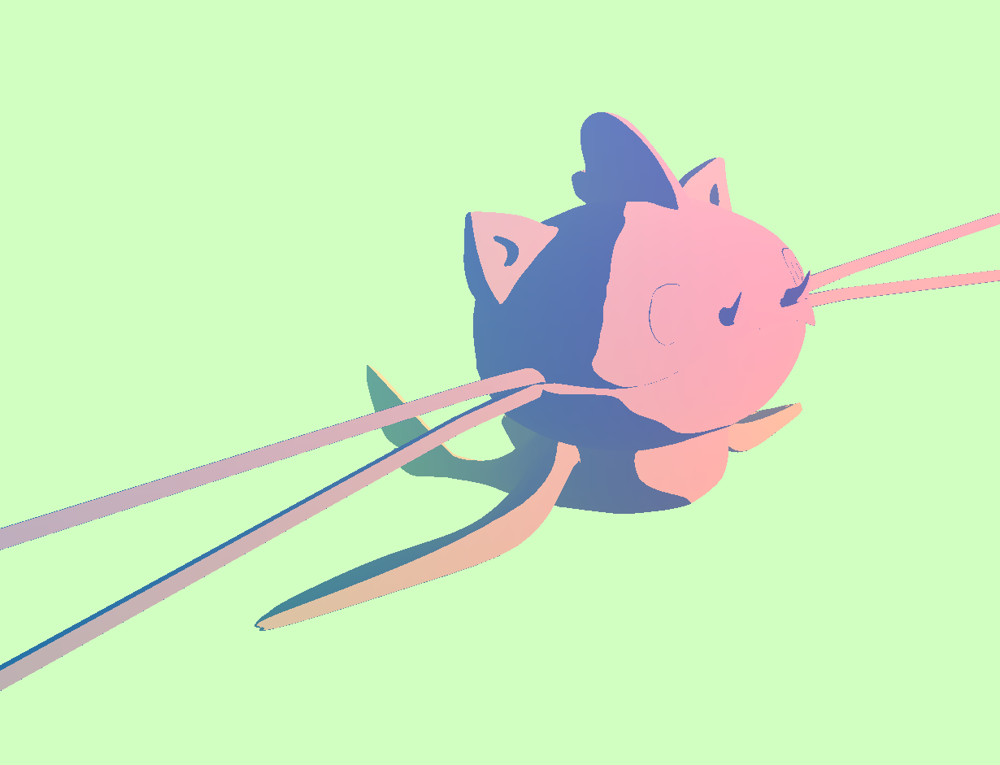

Overview
This project encompasses various techniques of mesh navigation, focusing on implementing algorithms related to the half-edge data structure.
We begin by understanding the Bezier curves and its implementation using the 1D de Casteljau subdivision algorithm. We then were able to extend that understanding to Bezier surfaces.
In the next section, we got to utilize half-edge data structures to create edge flips/splits to the triangle meshes, which aided us in implementing Loop subdivision.
Lastly, we were able to use the engine to create a custom toon-shader using the OpenGL library.
Section I: Bezier Curves and Surfaces
Part 1: Bezier Curves with 1D de Casteljau Subdivision
Briefly explain de Casteljau's algorithm and how you implemented it in order to evaluate Bezier curves.De Casteljau's algorithm is an algorithm that forms Bezier curves from several points in some coordinate space (for this project, we work in 2D and 3D Euclidian space). At its base level, given two points in some coordinate space, and a parameter t (where 0 <= t <= 1) as input, we can linearly interpolate the two points to find a middle point that lies on the final Bezier curve. When given a list of several points, let's say 5, we take two points at a time in order, interpolate with parameter t, and end up with a list of 4 points. We interpolating with the same parameter t until we end up with a list of just 1 point, which is the point on our Bezier curve. Below is the recursive formula to find the interpolated point given two points and a parameter t:
In order to evaluate Bezier curves, we created a for loop that cycled through the entire std::vector of Vector2D coordinates, and interpolated the ith and i+1th point in the list using the recursive formula given above, then returned a std::vector of interpolated coordinate points from one recursive step of running De Casteljau's.
Take a look at the provided .bzc files and create your own Bezier curve with 6 control points of your choosing. Use this Bezier curve for your screenshots below.Below is an example bezier curve we created and displayed on the renderer:
Show screenshots of each step / level of the evaluation from the original control points down to the final evaluated point. Press E to step through. Toggle C to show the completed Bezier curve as well.
|
|
|
|
|
|
|
|
|
|
|
|
Show a screenshot of a slightly different Bezier curve by moving the original control points around and modifying the parameter \(t\) via mouse scrolling.
Part 2: Bezier Surfaces with Separable 1D de Casteljau
Briefly explain how de Casteljau algorithm extends to Bezier surfaces and how you implemented it in order to evaluate Bezier surfaces.To understand how de Casteljau's works on Bezier surfaces, it would help to do a quick recap and understand how the algorithm works on Bezier curves. Again, the curve has a parameter u that varies between 0 and 1 and the algorithm calculates intermediate points by linearly interpolating between pairs of adjacent control points. To extend this to a Bezier surface, there needs to be a consideration of another parameter - let's call v - that also varies between 0 and 1. Together, u and v can be used to define that position of the point on the surface.
The implementation would then require everything to be increased by a dimension. So, the first step is to modify evaluateStep to have it return vectors to be a
3D vector instead of the 2D vectors from the previous implementation. Then, evaluate all the interpolated vectors for the points in the u direction. This
is done in evaluate1D by iterating over each row of control points and applying evaluateStep to obtain interpolated points along that row using the parameter u.
For each interpolated vector obtained in the u direction, we then need to find the interpolated vector in the v direction. This involves applying evaluate1D
again to each vector obtained in the u direction, this time using the parameter vin evaluate.
Show a screenshot of bez/teapot.bez (not .dae) evaluated by your implementation.
Section II: Triangle Meshes and Half-Edge Data Structure
Part 3: Area-Weighted Vertex Normals
Briefly explain how you implemented the area-weighted vertex normals.To implement area-weighted vertex normals, calculate the area of a triangle based on three vectors with the following formula:
where a and b are two vectors that make up the triangle. We then take the magnitude of its cross product, halved. Do this for each halfedge and iterate over all triangles that share that halfedge. For each triangle, add the face normal of that triangle weighted by the area of the triangle to the sum of normals for that halfedge. Iterate to the twin of the halfedge and continue the process until there are no more halfedges. After summing the weighted normals for each halfedge, normalize the resulting vector to get the final normalized vector.
Show screenshots of dae/teapot.dae (not .bez) comparing teapot shading with and without vertex normals. Use Q to toggle default flat shading and Phong shading.
Part 4: Edge Flip
Briefly explain how you implemented the edge flip operation and describe any interesting implementation / debugging tricks you have used.The edge flip operations requires a clear visual understanding of every inner halfedge, outer halfedge, edge, and vertex. As shown in the diagram from the "Guide to Implementing Edge Operations on a Halfedge Data Structure", there are 9 halfedges, 4 vertices, 4 edges, and 2 faces. It is important to note the changes that were made before the flip vs after the flip.
In the next part of the implementation, we reassigned each aspect in the diagram -
even if it is otherwise unchanged, for organization's sake. To condense the code for the halfedges,
it is easier to use the given setNeighbors(...) method, which can set a half-edge's next half-edge,
twin half-edge, vertex, edge, and face all at once. Then, with one line of code, we can
properly reassign all the relevant variables for each halfedge. We proceed with reassigning the appropriate
halfedge to vertices, edges, and faces. It is important to carefully follow the diagram in this step as there
are many places that an incorrect assignment can be made and can cause unexpected behavior in the image.
Show screenshots of the teapot before and after some edge flips.
Write about your eventful debugging journey, if you have experienced one.
We used the given check_for(*args) method to make sure that our mesh elements existed.
However, all of our bugs stemmed from mis-assigning vertices and edges, which just required
us to revisit the diagram, and ensuring that everything was labeled correctly and was being reassigned appropriately.
Part 5: Edge Split
Briefly explain how you implemented the edge split operation and describe any interesting implementation / debugging tricks you have used.Edge split required a similar approach to edge flip with the addition of having to add 1 vertex, 6 halfedges, and 3 edges.
When creating new elements, we used newVertex(), newHalfedge(), newEdge(), and newFace()
to create the new variables. Then, in the reassignment section of the code, setNeighbors(*args)
can be used again for half-edges. Each element needs to be assigned to the correct element based on the
diagram of the after-splitting above. For defining the new vertex, its position was defined
to be the midpoint of vertex 0 and vertex 1.
Show screenshots of a mesh before and after some edge splits.
Show screenshots of a mesh before and after a combination of both edge splits and edge flips.
Write about your eventful debugging journey, if you have experienced one.
For this task, the debugging came in when having to deal with uninitialized elements which led to potential segfaults. To mediate this, we defined a new halfedge to any other halfedge and reassigned it later on in the code. This mediated such issues. Other than that, we followed the same strategy from task 4 and carefully drew and followed the diagram to make sure the pointers were all correctly defined.
Part 6: Loop Subdivision for Mesh Upsampling
Briefly explain how you implemented the loop subdivision and describe any interesting implementation / debugging tricks you have used.We implemented Loop subdivision via the following steps:
-
Iterate through all vertices in the mesh, and set their
isNewattribute to false. We compute the updated position for these vertices after subdividing by using the following formula:
\( updated position = (1 - n * u) * (original position) + u * (original neighbor position sum) \)Then, we store the calculated position in
where- n is the vertex degree
- u = \( \frac{3}{16}\) if n = 3, \(\frac{3}{8n} \) otherwise
- \(original position\) is the position of the vertex before subdivision
- \(original neighbor position sum\) is the sum of all original positions of the neighboring vertices.
vertex->newPosition. -
Second, we computed new vertex positions associated with vertices created during subdivision. Since
we have not subdivided yet (thus, these new vertices don't yet exist), we store these new positions in
the edge which the new vertex will split. The new position is calculated as follows:
\( 3/8 * (A + B) + 1/8 * (C + D) \)We set each edge's
where the vertex positions A, B, C, and D are the same as the following diagram:isNewattribute to false. -
After computing the old vertex and new vertex's new positions, we split every old edge and update the mesh accordingly.
This involves adding a new vertex at the midpoint of the edge and updating adjacent elements such as faces and edges.
In the process of splitting, we also assigned the
isNew=trueto two new edges and the new vertex, and the divided edge to false.
We can check whether an edge is old or not by making sure that the edge's isNew=false, and both its vertices' isNew =false.Before splitting the edge - all mesh elements's isNew = false
After splitting - v4, e7, and e5 are labeled isNew=truein this diagram. We assign the newly-created e6'sisNew=false, because it is simply a result of splitting e0 in the diagram before the split. - We flipped new edges that had a new vertex on one end, and an old vertex on the other.
- Lastly, we update the positions of each vertex to their new positions, which is stored in the vertex itself if the vertex is from the previous mesh (vertex->newPosition), or in the edge if the vertex is created by the subdivision (edge->newPosition).
In terms of debugging, we used cout statements that printed values in the terminal as the code was running to determine where the error was when we ran into an infinite loop caused by infinite edge subdivision. We also has to pay attention to boundary conditions and special cases, such as handling boundary edges separately to avoid segfaults and other errors. We also had to fix our implementation of flipping edges when our subdivision appeared bumpy, double checked our conditions for splitting and updating edges, and also found an error with our calculation for updated vertex positions. We found that for loops were more effective for iterating between edges and vertices than while loops were.
Take some notes, as well as some screenshots, of your observations on how meshes behave after loop subdivision. What happens to sharp corners and edges? Can you reduce this effect by pre-splitting some edges?
After loop subdivision, meshes undergo changes that consist of smoothing sharp features, an increase in the density of the mesh, and lead to topology changes which can affect its connectivity.
Pre-splitting some edges before applying loop subdivision can help with the smoothing effect on sharp corners and edges. By strategically splitting certain edges into smaller segments, you can control the distribution of vertices and create smooth features more effectively.
|
|
|
|
|
|
Asymmetry occurs due to the initial irregular connectivity of the cube's edges and vertices. During subdivision, irregularities propagate, leading to uneven distribution of vertices and faces. This results in the loss of symmetry over iterations, as different parts of the cube undergo different levels of subdivision.
Pre-processing the cube with edge flips and splits ensures that the initial mesh has a more symmetric and regular topology. By flipping and splitting edges strategically, we can correct any irregularities and ensure that the cube subdivides symmetrically over iterations.
|
|
|
Part 7 (Optional, Possible Extra Credit)
Save your best polygon mesh as partsevenmodel.dae in your docs folder and show us a screenshot of the mesh in your write-up.
|
|
|
Include a series of screenshots showing your original mesh and your mesh after one and two rounds of subdivision. If you have used custom shaders, include screenshots of your mesh with those shaders applied as well.
|
|
|
|
|

|
Describe what you have done to enhance your mesh beyond the simple humanoid mesh described in the tutorial.
The catfish was box-modeled in Autodesk Maya from a Pokémon idea that Rebecca had, then brought into the Viewer. Additionally, we wanted to implement a custom toon-shader for the project, so we edited some code in the shader/frag file, following the given Phong shader as a reference.
The shader is implemented as follows: we calculate the RGB value outputted by the main Phong shader. Upon getting the RGB values, we determine its brightness by using the below equation copied from this StackExchange forum :
Upon receiving the brightness, we check to see if the brightness is above 0.12. If it is, we shade it with a peach color. If it isn't, we shade it blue. Why 0.12? It just gave us the best-looking result for this model.
The slight difference in hues within the peach and blue come from converting the vec3 type vertex position to a vec3 type RGB value, and adding the resulting color times 0.05 to the flat peach or blue color. The number 0.05 was chosen to yield a small difference in color, so that the peach and blue is still the main color.
Additionally, we decided to change the background color, and make it change over time. This is done by keeping track of a time variable, and using the glClearColor method ( glClearColor(1-0.3*sin(time + PI/2), 1-0.3*sin(time + PI), 1-0.3*sin(time), 1); ). As we can see, the RGB values change sinusoidally, and time is increased by 0.01 every frame.